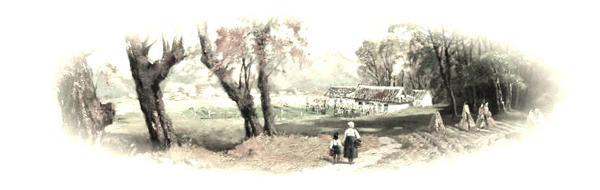

月亮的歌声
作者： 图：
二、约束的雏鸟
这儿村里人管叫萤火坡。萤火坡里躺着先人的灵魂，一眼望去，一堆堆石头拱出黄土地，王妈带着初秋踱步在小路上，如两片轻盈的叶子，向着朝阳始出时的微光，一前一后，小路上，少有花草，石头叠着，隐隐的藏着时光和岁月的秘密，厚重的感受不到生气，这样的静轻轻抓住清晨，相吻合一起。
王妈提着用细青竹编的篮子，篮子里装了厚厚的纸钱，自家粮的白酒，一打炮竹以及昨晚烧的肥鹅。村子里上坟习俗，”送三灵”，一灵，就是印了地狱通衢的黄纸钱，人死后到下面去了，那里还有一个世界，用的就是黄纸钱；二灵，自家粮的白酒，这酒得是自家酿的，因为人死后在下面冷，喝自家的酒，暖身子，就记得保佑上面的家人了；三灵，就是鸡鸭鹅，老人说，地府里没什么吃的，净是些渣滓货，亲人惦记这送点鸡鸭鹅算是给他们饱餐一顿了。而此刻王妈却没有把心思放在“送三灵”上，不时的回头拿眼瞅初秋，初秋一直低着头，跟在王妈后面，怯怯的，小小的。她默默念叨着，诅咒着自己的这张嘴。
“初秋啊，一会儿见着你娘了，就跟她说你过得很好，省的她在下面惦记，知道吗？”
“哦。”初秋怯怯的，眼睛又开始红了
“还有啊，一会儿烧纸钱时，去找根棍子把纸钱盖着，这附近都是坟堆， 风一吹，钱吹到别家坟前，你娘就收不到钱了。”
“哦，这样啊”
... ...
王妈一路上絮叨着，指东指西 交代初秋，其实她心里清楚，说这些是为了给初秋散散心，人活在世上，爱家里的每一个人，可人走了后，那种扯不开的情感必然还在一个世界到另一个世界连着，后辈儿孙们可能还是满脸茫然的对着这个世界，在生命路上一步一步摸索着，如同雏鸟般，王妈不想给初秋的生活留下影子，一个不大懂事的娃能够承受多少，初秋爸是个粗人，又不懂得照顾娃儿，初秋娘走得早，老天真是个欺软怕硬的主儿，净做些没道理的事儿。
山路渐渐引入一个大躺坡时，王妈说到了，初秋望去除了石头，就是纸钱香火残留的痕迹，阴森森的没有生机，一看到这初秋心里连打了冷颤，身上起出冷水浇身般的寒栗，当意识到母亲还躺在这没生气的地儿，眼泪就划出来了。王妈探着身子往前走，扫着石头上刻的名字，一个一个的认，有的上面长了青苔，王妈就用手抠了认，初秋一直跟在后面，帮她提着篮子，终于，王妈在一块黑白色斑点石头前停了下来，“来，初秋，你娘就躺这儿，你要记得这个地方啊.以后你长成汉子了，就要一个人来了。”王妈唤初秋过来，从少年手里接过篮子。
“恩，我以后要常来看娘。”初秋拿袖子擦着泪珠儿。
王妈 拿脚在地上蹭蹭，指着一块地方，“初秋啊，在这儿跪着."
初秋一屈腿跪了下去，看着面前黑白花斑石头。在一些不可深刻的日子里，也许他坐在自家的草垛上，也许是在父亲喝醉时，也许是一个人看月亮时，这个人总会萦绕进脑海，每次拽着父亲的手说想看娘，父亲总是偷偷一个人蹑手蹑脚离开，后来，无可奈何了，就告诉初秋娘去世了，初秋眨着眼睛看着眼前的男人，那时，小小的他还不懂，握着一双粗糙的长茧的大手指，一步一步看日落。后来，大一点，懂了娘再也没办法见到了，父亲去上坟总是一个人去，默默地，悄无声息的不让初秋察觉，拖着长长的脚步回来时，把初秋抱的紧紧的。
“爹...你怎么哭了啊。” 小初秋小手滑到了男人的眼睛上，轻轻地擦着。
男人握着那双温暖的小手，坚定了明天。露出一口黄焦牙，衬着有些浑浊的眸子，风吹着泛黄的衣服，摇摆着一对影子。
而此刻，王妈正在忙着弄三灵， 白酒的清香和烧鹅的肉香混之在一起，而在初秋心里却弥漫着又酸又哭又涩的味道，王妈掏出酒壶，往石头边撒了三圈，“英红啊，初秋来看你了，知道你在下边冷，送点白酒给你暖暖身子，”继而转过身子，“初秋啊，磕头。”
初秋手摆地上，敦实的磕了起来.
“记得要磕九个啊。”
少年不说话，心里默默数着。
“英红啊，初秋在上面好的很，你别惦记，去跟阎王爷求求情，早日找个好人家投胎，上辈子你也受了不少苦，阎王都记着呢，不会为难你的。”
初秋 可不这么想，娘万一投胎了，就不在下面惦记着他了，想到这里，泪珠又流出来了，单单的身子里空空的。
太阳渐渐升起来了，正值伏节天气，太阳一出来就晒得燥人， 王妈从袖口扯出花布手绢，擦了擦额头，又麻利地扯出肥鹅，撕开上面包着的油腻腻的纸片，放在石头前，“知道你在下面没吃好的，那里的东西也不干净，净是些骨头渣子，今儿给你送好吃的来了，你就趁着酒，把这鹅下了吧。”肥鹅放在石头前，一动不动。
“这样娘就可以把鹅吃了吗？”
“恩”
初秋盯着鹅，鹅依旧一动不动。
“磕九个头，有什么话现在快说出来，你娘在看着你。”
“哦”少年又开始敦实的磕头，尽了苦涩心里 ，说不出话来，他知道在那些想念日子里，他把话都说了，娘也一定听见了。
王妈已经开始在烧纸钱了，一摞纸钱被放在石头叠起的凹处，伏节天，干燥，点燃后就猛地烧成一片，王妈捡起路上扳断来的的生竹棍，压在上面，又拿出花布手绢，擦了擦汗，在一旁喘气，初秋望着她，双腿还在地上跪着。
“再磕九个就可以走了。”王妈拿手绢拍拍身上的灰。
初秋磕完后，起身时感到一阵痛觉，跪的时间长了，膝盖痛麻了。
“英红啊，我带初秋走了啊。”王妈拉了拉旁边望着石头发愣的初秋。
少年回头望了望，跟在王妈后面，步子有些趔趄。
伏节天气，太阳半升头，就暑的逼人。王妈扯开补子迈得很快，边诅咒着要人命的天气，初秋趔着身子小跑着，跟着她的步伐。当山一边的村子越来越清晰的扯入眼前时，步子才慢了下来，回头看初秋，趔趄着喘气。“诶呦，娃儿，走不动你跟王妈说啊。”说完把手绢塞进袖口，身子弯下来，“来，上来。”
初秋抱了上去，趴在王妈背上，一瞬间，闻到了久闻却又疏远了好久的味道。
到了村口，王妈把初秋放了下来，“丫蛋的，你可把王妈给累死了，你先回家看看，一会吃午饭时我来叫你，”
“知道了，王妈，”初秋趔着步子往村尾走。
“你腿怎么了？”
“跪疼了。”
“唷，那先去胡老爹那儿上点药。”王妈搂上初秋的裤子，膝盖红了一片。“诶哟，丫蛋的，都红这样了，怎么不早跟王妈说啊。”
初秋手扯了扯衣服，操到身后，不说话。
胡老爹是村里的郎中，家中堆满了草药，村里谁病伤了，几副草药，就药到病除，老人也不收钱，村里人也朴实，有点好吃的，都会请胡老爹去，胡老爹也不客气，这样一来，两边都觉得踏实。
王妈带初秋到胡老爹家时，老人正躺竹椅上悠闲地挥着蒲扇，“阿叔，给初秋看看脚社。”王妈搂起初秋的裤子，指着红紫色的地方。
“哟，初秋啊，”老人不紧不慢地起身，走到初秋身旁，拿手摁了摁伤处，初秋拧着眉毛叫了起来。
“别叫，爷爷再给你看伤，这么不晓事呢。”王妈碍着脸赔笑。
胡老爹只看了一眼，“没事儿，伤的微，你们先回屋，一会我开点草药送来。小狗蛋，这么熊，伤了吧。”
“不要你瞧，你个骗人的坏老头。”初秋嘟着嘴巴往外走，心里想着狗尾巴草的事，却被王妈一把拉住扯了回来。
“丫蛋的，怎么讲言语的，再这样让你吃鞭子。”王妈听得火大。
“谁叫胡老爹骗我，狗尾巴草里面根本没毛狗。他是个骗娃儿的臭老头。”初秋死认理不放。
“臭狗蛋的，还敢这样说，看我不揍你。”王妈把初秋一抬，往家里扯，胡老爹上来拦，可王妈，碍着脸面，非要揍初秋，终是没拦住。初秋在王妈背上嘶喊着大叫，老爹勉强着无可奈何，就跟在王妈后面，王妈正因为失了脸面怄气，头也不回。胡老爹跟了一半路，想这不是办法，回家配药去了。
王妈扛着初秋往回走，村子人都探着头瞧，王妈更觉得失了脸面，脸燥得通红，加上天热，一肚子气，恨不得把初秋摔在地上。回到家里，七子出来接，王妈也不理会，把初秋往地上一放，就着赶鹅的木条使劲抽，边抽边骂，初秋围着跑，王妈死死的不放。七子吓得在一旁不敢出声，小年纪的她从没看娘发脾气。打了好久，骂得嘴里尽是泡沫星子，初秋疼的大叫，又哭的说不出话。王妈也倦了，把木条一扔，回房去了。
初秋见状冲了出去，七子跟着边跑，边唤他停下。
伏节天，少年心中又热又痛。
三、小小的小小
阳光灼干了了眼泪，沾满泥土的小脚丫踩开了一地的斑斓，散发一份扯开心扉的疼，风将树叶吹得很轻，一摇，一摆，轻如脆弱的小小步伐，心一燥热，蔚蓝蔚蓝的天空就开始下雨了，一滴，一滴，滴在身体最深处，在初秋的眼睛里，这场雨，整个世界都无处可以躲避。他如同一匹受挫压抑的马开始奔跑，奔跑，到所有的一切竭力摆脱。
“初秋哥，你快停下，”七子得小脚步追不上已经跑了好远的背影， 村子里你来我往之间立马多了夸张的眼神，很是招人眼目，吃饭的，扛着锄头的，缝衣服都躲在附近人家里避雨。七子都已近完全淋湿了，常妈一把把七子扯了进来，七子想扯开常叔的手，加快脚步，但身体却停在原地，僵僵的，初秋留下的一点一点片影慢慢顿失在雨水中。
“初——秋——哥——，”七子大声叫唤，“初秋哥跑了，常妈你快去找他。”
“啊。”常妈扯开挂在梁上的雨衣就冲了出去，常兴跑过来给七子擦雨水，大伙拢过来问道情况。
常奶奶把常兴的衣服找了出来，唤着七子穿上，衣服大了点，七子娇小的身体缩在里面发抖‘，眼眶红红的，分不清是流过雨水还是泪珠。大伙挤在一旁安慰七子，平楼青舍雨雾里，雨，是忧伤的眼睛。
七子啜啜泣泣的，“娘发了好大脾气，打了初秋哥，初秋哥就跑了,下这么大雨，初秋哥要是伤了怎么办啊?”
“没事的，小七，我娘已经去找了，初秋一会儿就回来了啊，现在啊，把身上弄干啊，不然咳了就又要麻烦胡老爹开药了。”常兴拿毛巾卷住小七的头发，大家都来说了几句，安慰一下七子，其实在大人们的眼睛里，这没什么大问题，娃闹脾气了，有人去寻了，就没事了，只是看着七子流眼泪，大伙不忍心罢了，所以来哄两句。常兴是个大姐姐，比七子和初秋都要大，常兴经常带着初秋和七子玩，初秋爱看天边变化莫测的云，七子爱摘小野花，插在她最心爱的帽子上，那顶帽子是王叔从外面镇上带回来的，七子很爱惜，出去玩的时候，总戴上上，阳光下的七子像个小公主，初秋和常兴牵着她，一起玩到日落。
不少人都顶着雨回自己家去了，七子望着外面的天空，灰蒙蒙的，仿佛承载了太多的伤心，但七子不懂，娘为什么要这样发脾气。常兴在她身边坐着，看着她。
“小七，现在告诉姐姐我，初秋怎么了？”
“我也不知道，娘今天很早就和初秋哥出去了，”
“去哪儿了啊？”
“萤火坡，说是给初秋娘送纸钱，可后来回家时，娘就开始打初秋哥了，然后娘打完了，就回屋了，初秋哥就跑了，我赶也赶不上，后来就下雨了，初秋哥也不停...”七子说着又开始啜泣了。
常兴拿毛巾给七子眼眶擦了擦，“没事的，初秋一会就会回来的，一会雨停了，我和你去看看你娘。”
“恩。”雨声隆隆，风刮得雨滴作舞。
一大一小的孩子，依偎在一起，望着天空。
这是夏日的一个傍晚，雨匆匆来，停驻了好久后，停了。
常兴牵着七子，踏在泥泞的路上，在广阔的天穹下，夕阳给大地撒上了一层金边，瓦檐还在滴水，一点一点，融在这个世界的心里。
七子一边想着娘，一边想着初秋，黄昏十分神秘，像罩了层面纱，小小的视线里熹熹微微，奔放的夏天褪去了燥热，在淡淡里升华，和落日的动作接上轨迹。
在离家不远的葡萄架前，初秋看到了一个熟悉的身影，却显得佝偻，身体打着疲惫的记号一摇一摆，在湿的的彻彻底底的身体上，还有被割伤的痕迹。
“娘。”七子一把冲过去，泪珠像止不住心疼喷涌而出。
“王妈，你怎么了。”常兴看着王妈的样子，脸已经划伤了，身体通透的被雨水浸透，在浑浊的眸子里，看得出焦急，一下狂热的夏天此时寂静无声，将王妈的脆弱看得一览无余，那个善良的女人在夕阳下显得无比苍老。
“初秋这娃回来了没有啊？”王妈看着两个孩子，费尽力气干干的掏出这句话。
七子扶着王妈，她不愿见到娘最压抑受伤的样子。
“王妈啊，你别急，我娘那时跟在后面去找去了，刚刚雨大，肯定找到后在哪个地方多雨，一会儿就会回来了，”常兴也过来扶王妈，“王妈啊，我们先回家，你身体受不得这样折腾。”
“真的，是这样的吗？那初秋他，他一会儿就会回来对吗？”王妈咬着青紫的嘴唇。
“恩，”常兴说着心里一阵绞痛，于是在心里轻声默念，初秋你一定要快回来啊。
“那就好，这娃啊，命其实好苦啊，怪我，不该打他啊。”王妈浑浊的眸子流下了几滴老老的眼泪，眼泪滑到地上荡的很沉，很沉。
平房里，王妈临时找出来的被子里止不住的咳嗽，常兴和七子守在一旁。
“来，娘，喝口热水吧。”七子抱着缺了瓷角的杯子。
王妈颤颤巍巍的接过杯子，却颤颤的拿不稳，杯子像个顽皮的球，从王妈手中滑落，跃到了地上，散开出一地的水花。
“娘——”七子一把上去抱住王妈。“你怎么这样了，娘你快好起来啊。”
常兴捡起杯子，默默走到一旁，又换了杯水。“来，王妈，我喂你喝。”
王妈张开嘴喝了一口，屋外传了了一阵脚步声。“快，去看看，是不是，是不是初秋回来了。”王妈顾不上喝水，唤着两个孩子。
进来的人是胡老爹，提着拿荷叶包的鼓鼓药，“诶呦，这是怎么回事啊？"老人放下药，走过来，”娟啊，你么弄成这个样子了啊。”
“叔啊，你看见初秋没，”王妈看着老爹，眼睛里闪过一丝希望。
“初秋啊，没有啊，我下午不是给初秋配药啊，天公下午发脾气，闹了一下午，我都在家，没看到啊。”
王妈眼里闪过的希望又消失了。
“到底是个么司事啊？”老人看着无比失落的王妈。
常妈是一个人回来的，王妈看到常妈时，从床上咕噜着爬下来了，孩子和胡老爹赶紧来扶。
“云翠啊，你见初秋没啊。”王妈扯着常妈的手。
“娟啊，我听小七一说，就跟了出去，这娃跑得太快，过了一个股子坡，就不见影了。时候逢着雨猛，我就停了一会儿，再去找的时候，就找不到了娃了。”常妈看着王妈模样，心里倒不出个痛快，像是一百个不舒服压在嗓子眼上。
王妈瘫在了地上，大声的嚎，“这叫我怎么办啊？初秋爸临走时把初秋交给我，现在娃儿要是出事了，我怎么向他交代啊，初秋是苦命的娃儿，我的个干儿啊——”
常妈说不出话来了。
“娟啊，叔去把你问问啊，你莫急啊。云翠啊，你和我一起，附带去我家给娟儿抓点药。”
“叔啊，你一定要问问啊。”
其实胡老爹现在也有些自责 ，当初没开狗尾巴草的玩笑，初秋就不会有这样的事了。老人离开时面色很沉重，常妈跟在后面，紧紧地挎着步子。
天色已经完全暗下来了，房间里的王妈满目憔悴，常兴和七子守在一旁。
七子想着那个经常背她的少年，在太阳下奔跑的样子... ...
常兴在外面做饭。
老爹和常妈也没有回这儿来。。
王妈望着窗外，焦急的等待着，黑黑的夜晚没有星星，也没有月亮。【未完待续】